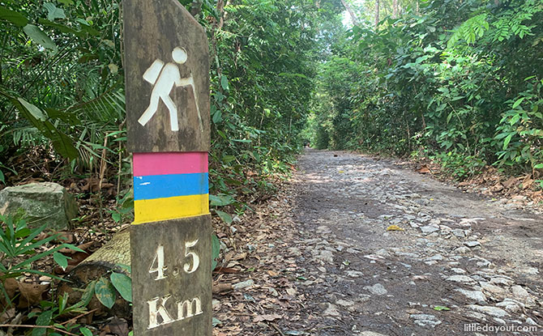
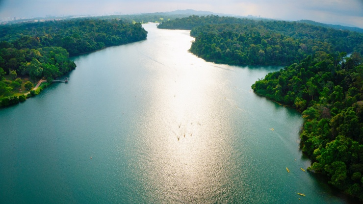
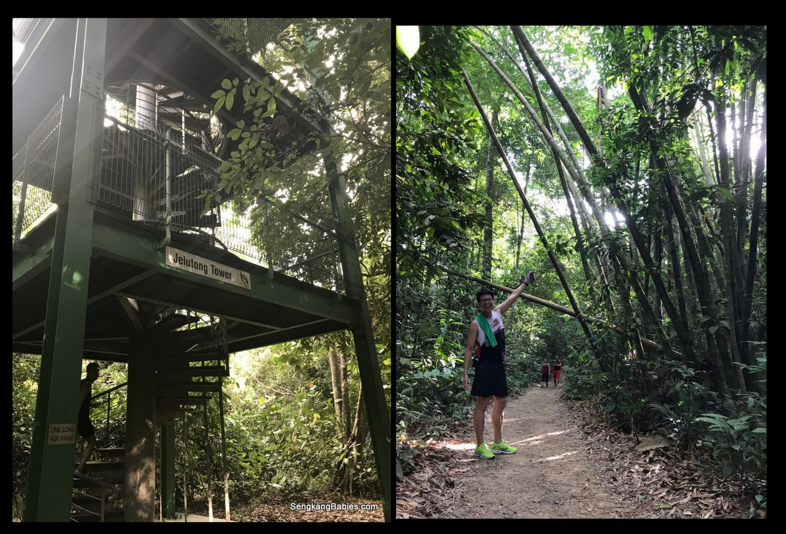
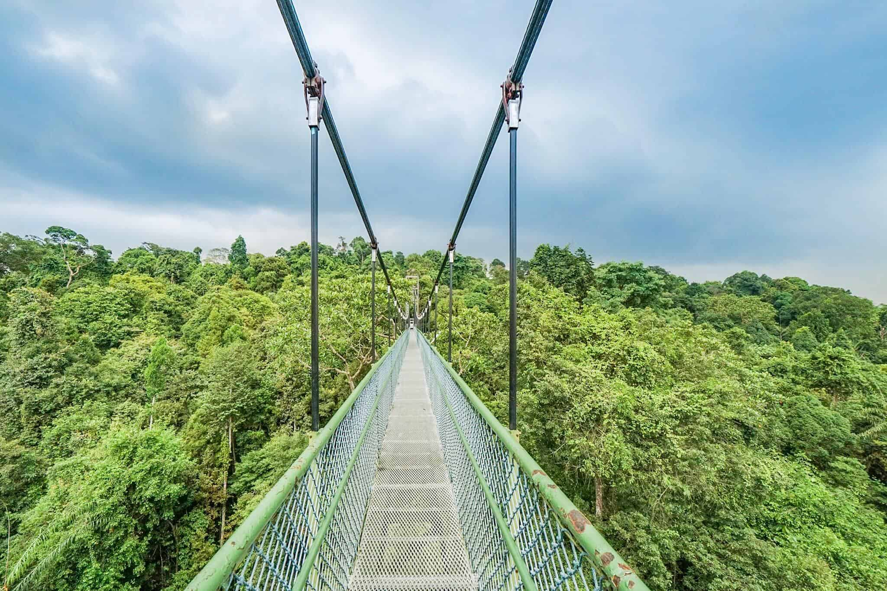
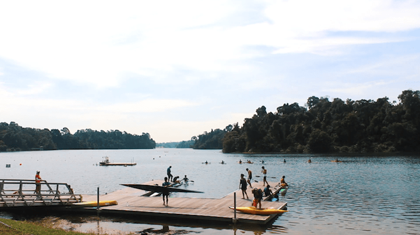

Take a Hike through this Wonderous Trail
Click to check out what's in store!
You could Jump to our Main Attractions,
Check out the Sightseeing opportunities or
Take a look at the General Guides.
Macritchie Reservoir was built in 1867 and its features include:
- Macritchie Trails, an extensive 11-kilometre nature trail that runs along the parameters of the reservoir
- Macritchie Reservoir, the largest reservoir at the heart of Singapore
- Jelutong Tower, a hidden gem found in the middle of Macritchie's hiking trails
and many more!



Macritchie Reservoir consists of 2 main attractions
Firstly, the TreeTop Walk (TTW) is usually the highlight of hiking trips dedicated to the area.
Connecting the two highest points in Macritchie, TTW is a suspension bridge that spans 250m.
It is the ultimate phototaking for nature go-ers and hikers alike!

Unfortunately, TTW is currently undergoing maintenance till May 2021.
Click here to check out the alternative route you can take.
Nonetheless, fret not as there are still a ton of things to enjoy around the area. Click here to see more. 😄
Secondly, Kayaking is another popular activity that is available at Macritchie Reservoir.
With calm waters and a great surrounding of nature all around,
Macritchie Reservoir is the perfect kayaking spot for all to enjoy!

Click here to check out the bookings!
Here at Macritchie, you can find all sorts of diverse wildlife, here are but just a few of what you can hope to spot. 📷
To get a better grasp of Macritchie, check out this guide here.
By Bus:
- The nearest bus stop is 51071
- Buses to take are 855, 852, 167, 166, 165, 162M, 162, 157, 156, 132, 130, 93, 74 and 52
By Train:
- The closest MRT station is Marymount
- You can either walk 10min or take a bus numbered 855, 852, 165, 74 or 52 to get to the park.
By Car:
- The park has a green two – storey car parking lot near the entrance
"
Hope you have a wonderful time at Macritchie Reservoir!
Facebook |
Twitter